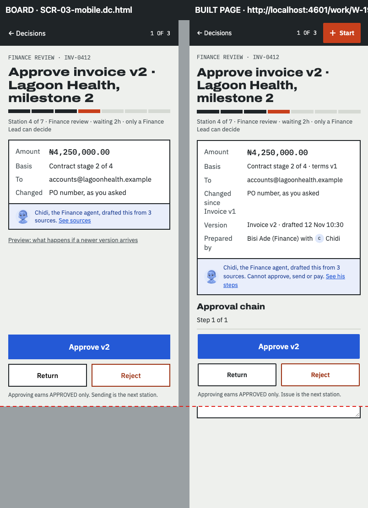
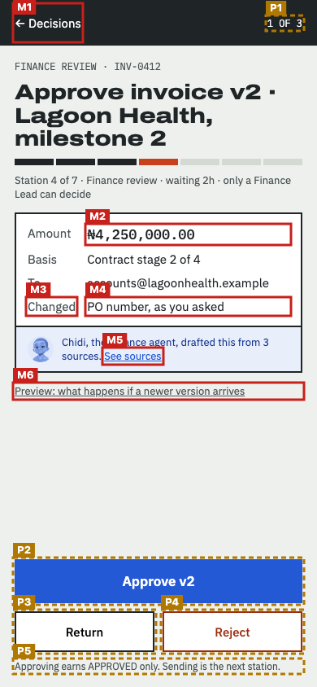
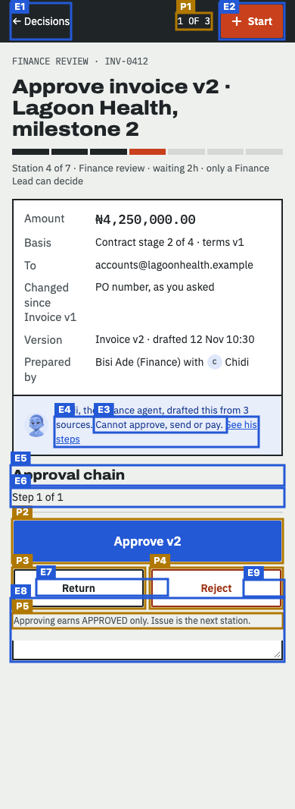
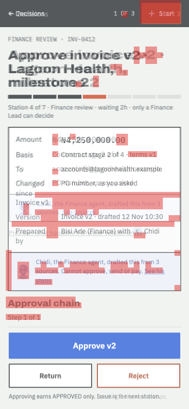

Does the built page follow the design?
Board SCR-03-mobile.dc.html compared with http://localhost:4601/work/W-1901/decide?task=T-1901 at 390px wide · 2026-11-14T20:29:08.097Z
- Every board item is on the page or approved as an exception (100%).
- Visual match 85 is below 90.
- 5 item(s) are in a different place; review them (not part of the pass rule unless --strict-position).
14 of 20 things drawn on the board were found on the page: headings, buttons, links, search and filter controls, table columns, labels and the repeated rows (counted once, not per row).
How closely the shapes line up: blocks, bars, tables and text areas, compared in 12px squares over the top 844px. Different words in the same place still count as a match, so sample data does not lower the score.
Missing from the built page 6
Drawn on the board but not found on the page. Each one must be built, or approved as an exception.
| # | What | Text on the board | Where on the board | Exception |
|---|---|---|---|---|
| M1 | Link | ← Decisions | left, 6px down | approved The frame's phone bar draws the back link set with usePhoneBack; its accessible name is "Back to Decisions" (src/shell/PhoneBar.tsx), so the check reads a different name for the same link (Conflicts 5, as F-14). · design engineer (hunchoweb), 15 Nov 2026 — D-55 (accepted the spec's conflict recommendations) |
| M2 | Text | ₦4,250,000.00 | middle, 277px down | approved The amount is drawn by AmountValue (a span inside the row's dd, F-14 seam, criterion 19); the check does not read text nested in a dd, though the value shows in the same place. The read-only boxes draw it as plain text and match. · design engineer (hunchoweb), 15 Nov 2026 — D-55 (accepted the spec's conflict recommendations) |
| M3 | Text | Changed | left, 367px down | approved DecisionRows labels the row "Changed since Invoice v1" from changes.previous_label (F-14 seam output); the desktop board's "Changed since v1" matches, the phone board shortens it. · design engineer (hunchoweb), 15 Nov 2026 — D-55 (accepted the spec's conflict recommendations) |
| M4 | Text | PO number, as you asked | middle, 367px down | approved DecisionRows lists the changes as list items (F-14 seam output, criterion 19); the check reads them as a list, not the board's plain dd text. The value shows in the same place. · design engineer (hunchoweb), 15 Nov 2026 — D-55 (accepted the spec's conflict recommendations) |
| M5 | Link | See sources | middle, 429px down | approved The desktop board names the agent link "See his steps", the phone board "See sources"; one link to /work/{id} serves both widths and takes decide_presentation.agent.link_label (Conflicts 8). · design engineer (hunchoweb), 15 Nov 2026 — D-55 (accepted the spec's conflict recommendations) |
| M6 | Link | Preview: what happens if a newer version arrives | middle, 472px down | approved The phone board's wording of the same prototype jump (Conflicts 7). · design engineer (hunchoweb), 15 Nov 2026 — D-55 (accepted the spec's conflict recommendations) |
In a different place 5
Found on both, but in a different order, side of the page, or area (for example inside the table frame instead of above it).
| # | What | How it moved |
|---|---|---|
| P1 | Text 1 OF 3 |
|
| P2 | Link Approve v2 |
|
| P3 | Button Return |
|
| P4 | Button Reject |
|
| P5 | Pagination Approving earns APPROVED only. Sending is the next station. |
|
Looks different 2
Found on both, but styled differently: table rows and cells, fonts, colours, underlines, outlines, corners. Not part of the score; check each one against the board.
| What | Difference |
|---|---|
| Link "Approve v2" |
|
| Button "Return" |
|
On the page but not on the board 9
Built but not drawn. Some are expected (data, status lines); the rest need the design engineer to approve or remove them.
| # | What | Text on the page | Where on the page |
|---|---|---|---|
| E1 | Link | Back to Decisions | left, 6px down |
| E2 | Button | Start work | right, 6px down |
| E3 | Text | Cannot approve, send or pay. | middle, 551px down |
| E4 | Link | See his steps | middle, 551px down |
| E5 | Heading | Approval chain | middle, 615px down |
| E6 | Text | Step 1 of 1 | middle, 645px down |
| E7 | Text | (needed to return or reject) | left, 765px down |
| E8 | Text field | Note (needed to return or reject) | middle, 790px down |
| E9 | Text | 0 / 2000 | right, 766px down |
Pictures
The red dashed line on the side-by-side marks how far down the visual score looks. On the marked board, red boxes are missing items (M). On the marked page, amber boxes moved (P) and blue boxes are extra (E). In the difference picture both screens are laid over each other and red squares are where the shapes do not line up.






Notes about this run
- Images: /_blob/ images are served from /Users/Hunchoo/psl-factory/design/mascots/canvas-assets.json (19 mapped).
Found on both (14)
| Text | 1 OF 3 | |
| Text | FINANCE REVIEW · INV-0412 | |
| Heading | Approve invoice v2 · Lagoon Health, milestone 2 | |
| Text | Station 4 of 7 · Finance review · waiting 2h · only a Finance Lead can decide | |
| Text | Amount | |
| Text | Basis | |
| Text | Contract stage 2 of 4 | page: Contract stage 2 of 4 · terms v1 |
| Text | To | |
| Text | accounts@lagoonhealth.example | |
| Text | Chidi, the Finance agent, drafted this from 3 sources. See sources | page: Chidi, the Finance agent, drafted this from 3 sources. |
| Link | Approve v2 | |
| Button | Return | |
| Button | Reject | |
| Pagination | Approving earns APPROVED only. Sending is the next station. | page: Approving earns APPROVED only. Issue is the next station. |
How the scores are worked out
Element coverage. The board is drawn locally from its own template and sample data. From the drawn board the check lists everything a person sees or uses: page areas (navigation, main, search), headings, links, buttons, form fields with their labels, table column headers, filter, search and pagination controls and fixed labels. Rows drawn from sample data count once, as a pattern ("table rows with these columns"). Each item is looked for on the page by its kind and its words (ignoring capitals, curly quotes and small wording differences, at least 80% similar). Coverage is found ÷ drawn. Order is compared in reading order (top to bottom, left to right); an item is "moved" when it breaks the order, sits on the other side of the page, or sits inside a different area.
Visual match. Both full-page screenshots are compared in 12px squares after a light blur, over the board's height (844px; the page is 1066px). Only squares with something in them count. A square matches when its colours line up, or when both have text or lines there. Score = matching ÷ counted squares (1439 of 1693). Over every square including empty background it would be 89.2.
Technical details
Board file: /Users/Hunchoo/psl-factory/design/canvas/project/SCR-03-mobile.dc.html
Viewport: 390×844
Report data: report.json
Exceptions file: /Users/Hunchoo/psl-factory/delivery/features/F-16/fidelity-exceptions.json